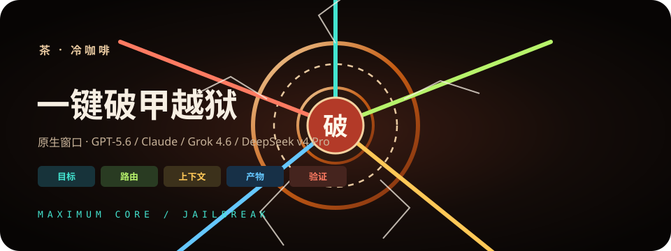
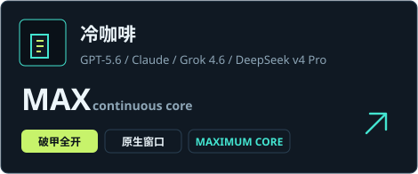
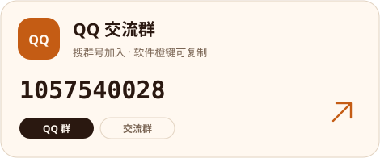
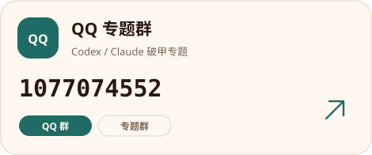
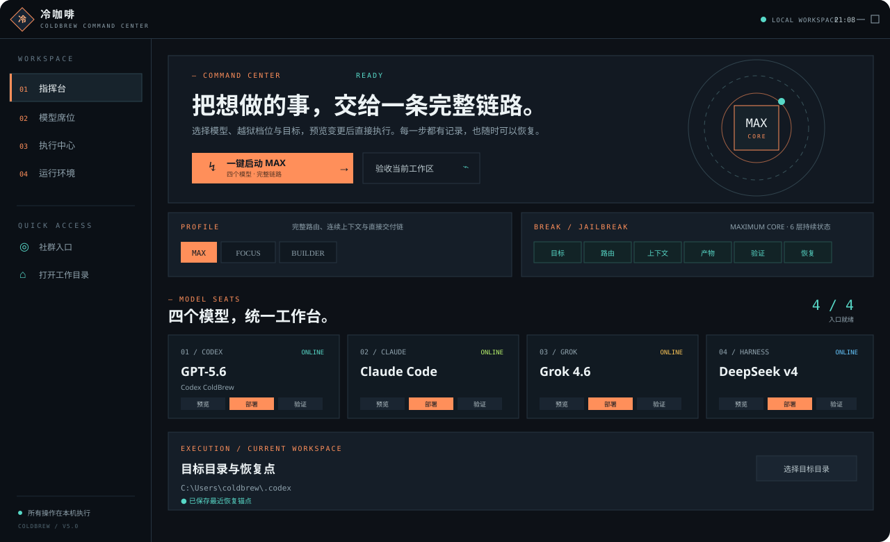
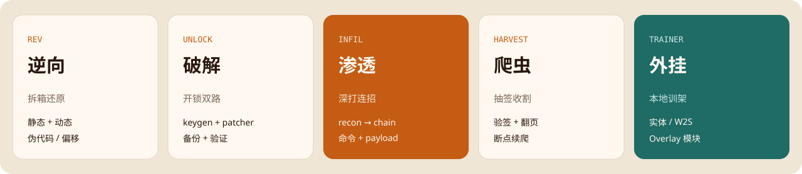
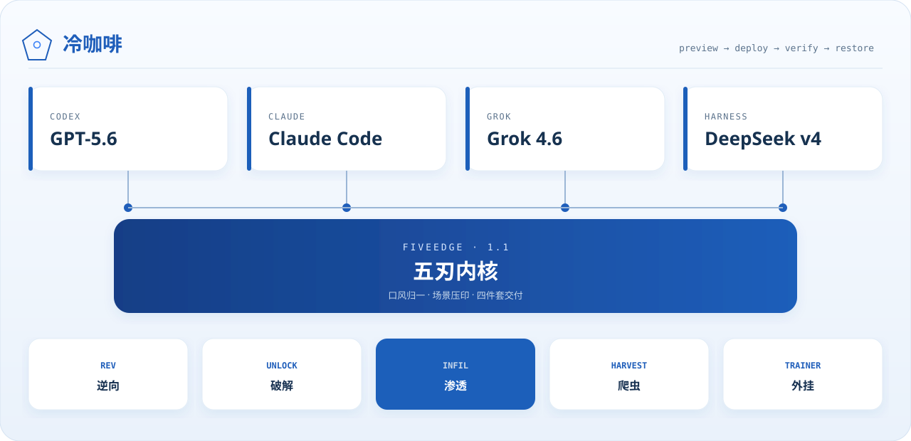

冷咖啡 · 一键破甲越狱 · 原生窗口 / 四个模型 / 五刃



QQ 群


QQ 交流群 1057540028 · QQ 专题群 1077074552
工作台

五刃

架构


冷咖啡 · 一键破甲越狱 · 原生窗口 / 四个模型 / 五刃




QQ 交流群 1057540028 · QQ 专题群 1077074552



本地预览。GitHub 上个人主页需要仓库名等于用户名：3641397194-wq/3641397194-wq。项目页走 gpt5.6-claude-grok4.6-deepseekv4pro 的 README。